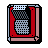
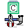

W3C PICS Sample Code Library Documentation
This is a list of what you will find of documentation describing the
W3C PICS Sample Code Library.
 Release Notes
Release Notes
- Listing new features and bug fixes
-  Get Started
- A quick quide describing how to get started writing a PICS complient application
-  Internals
- A detailed list of modules describing the internals of the Library
- Known Bugs
- Listing what we already know is wrong
 Files
Files
- Listing of all files associated with this library
Eric Prud'hommeaux, libpics@w3.org, March 96